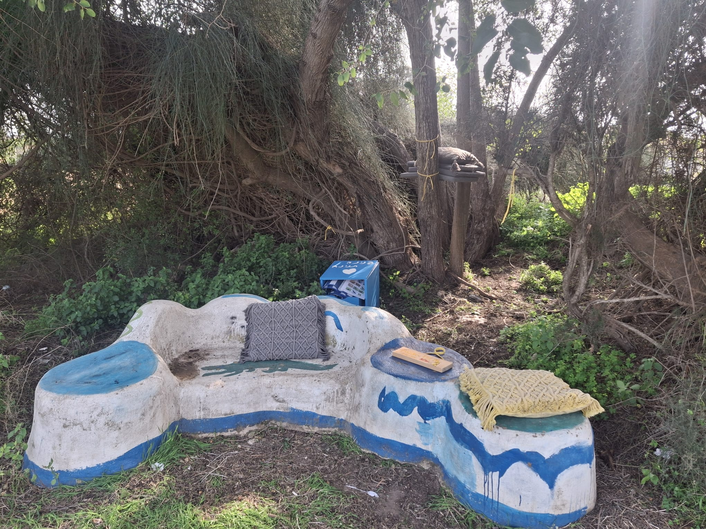
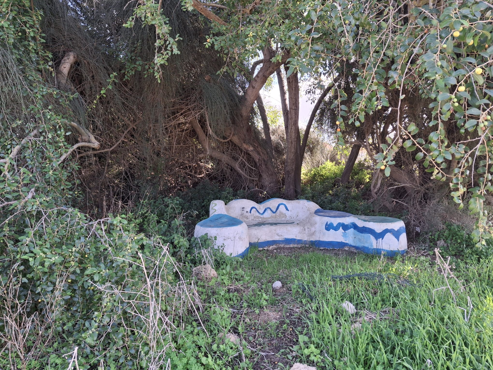
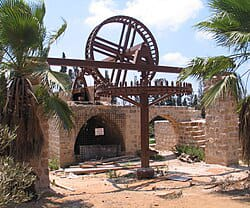
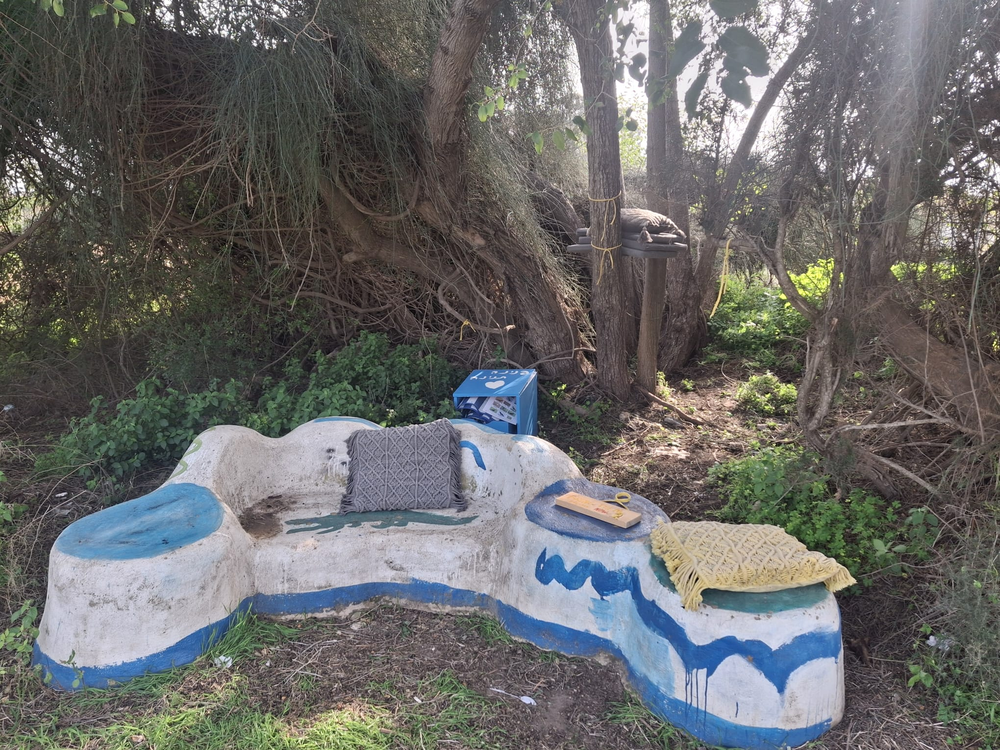
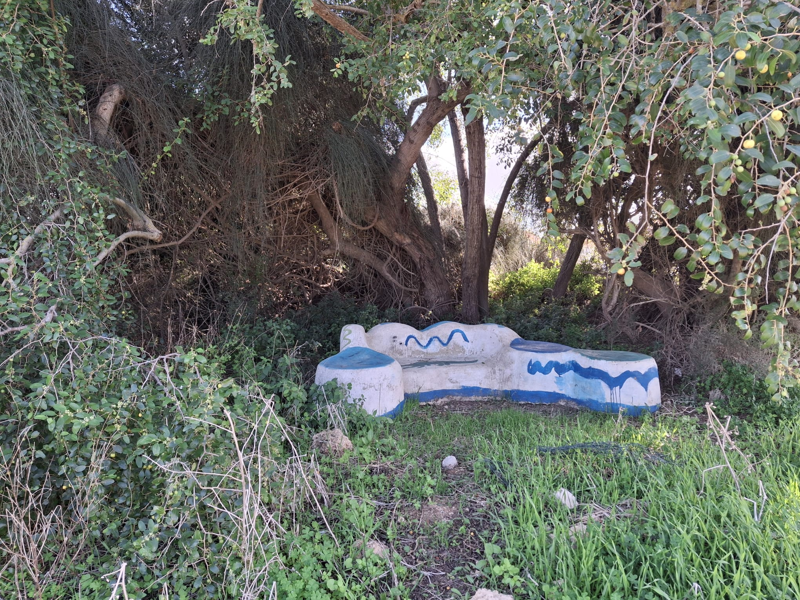
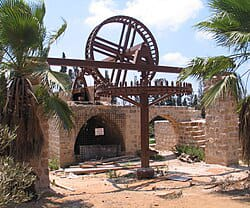
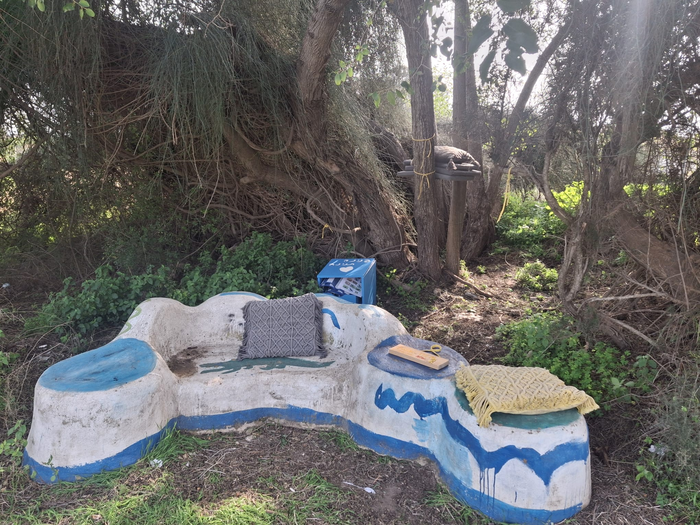
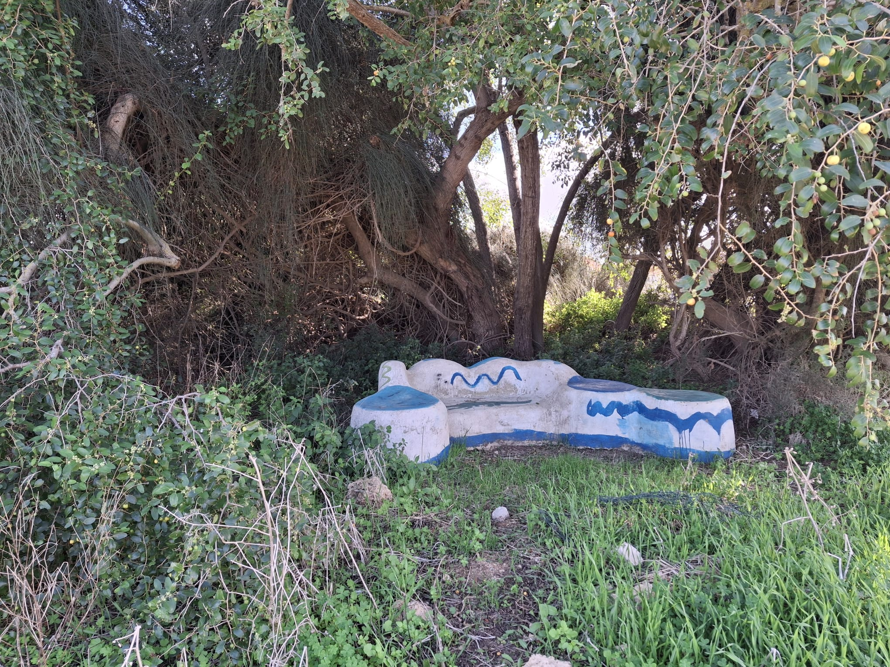
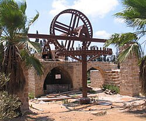

טיפוח גני בנימינה הוא פרויקט ייחודי לשימור והעצמת אזורי הגינון בבנימינה, עם דגש על שיתוף קהילתי והיסטורי.



אמת המים הבלתי גמורה נמצאת באזור נחל תנינים ומהווה עדות להנדסה הרומית.
פנינה תנינה הוא אתר טבע מרהיב בבנימינה, המשולב במסלולי הליכה ונופים ייחודיים.
היא באר עתיקה באזור בנימינה הממחישה את שיטות ההשקיה הקדומות.
תחנת הקמח בבנימינה היא אתר היסטורי בעל ערך רב ששימש לטחינת חיטה.